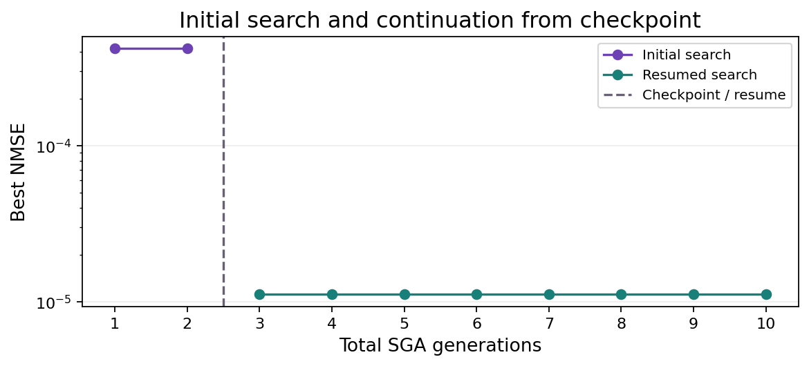

Checkpoint and resume with an agent
This walkthrough shows a short search, a saved checkpoint and a second search that continues from it. The conversation is illustrative; the checkpoints and results were produced by direct calls to the current controller tools.
Start a session
Install the controller and configure an endpoint, then open an interactive session with the bundled Burgers data:
kd-agent chat --dataset burgers \
--workspace out/agent-resume
For your own file, use:
kd-agent chat --data sample.npz \
--workspace out/agent-resume
The file command assumes the KD NPZ layout.
Other layouts can supply array mappings through
--load-options.
Run a short search
Enter a request such as:
Use SGA with seed 0 and population 20. Run 2 generations, save a checkpoint
at each generation, and show the equation and run ID. Then wait.
The controller passes the dataset and search settings to run_discovery.
KD runs the search, saves its state and returns an equation, measurements and
a run ID. The checkpoint contains the search population, random state and
current best candidate; it lets a later call continue this search.
Search tool arguments
{
"dataset_id": "burgers",
"algorithm": "sga",
"params": {"generations": 2, "population": 20},
"seed": 0,
"checkpoint_every": 1
}
Resume from the checkpoint
In the same conversation, ask:
Continue that run from its latest checkpoint for 8 more generations with
the same settings. Show the updated equation and compare the two results.
The controller passes the first run's ID as resume_from_run_id. It resolves
the latest eligible checkpoint and restores the saved state before searching
again. The eight generations are additional work, giving ten generations in
total. The second search has its own run ID and retains a link to its parent.
Resume tool arguments
<first run ID> stands for the ID returned by the preceding call.
{
"dataset_id": "burgers",
"algorithm": "sga",
"params": {"generations": 8, "population": 20},
"resume_from_run_id": "<first run ID>",
"checkpoint_every": 1
}
The seed is inherited from the checkpoint. Reopening the same workspace in a
later kd-agent chat session also makes its recorded searches available.
Checkpoint details explain eligible restore points and
which parameter changes are allowed.
Demonstration results
These results were produced with KD 0.8.0 on 2026-09-15. Both segments used the same Burgers data, population and seed.
Initial search
$$ u_{t} = - 0.99963 u u_{x} + 0.10054 u_{x x} $$ Resumed search
| Segment | Generations | NMSE |
|---|---|---|
| Initial | 2 | 0.00041698 |
| Resumed | 8 | 1.1178e-05 |
The completed second run records checkpoint_final.pt from the
first search as its restore source. The first two generations were preserved;
the resumed call added eight more. The native NMSE measures the equation's fit to the
same time-derivative target in both segments.
Download the demonstration results for full coefficients, run IDs and checkpoint provenance.

Results and records
The agent can submit the resumed equation with its run ID. The report links
the answer to that search and records the earlier segment as its checkpoint
parent. Open out/agent-resume/report.md to inspect the equations, measurements
and search history; the command prints this path when it writes the report.
The report is updated after each turn. Enter /exit to leave the conversation.
The language model interprets your requests and chooses tool calls. KD carries out the numerical searches and checkpoint restoration. The saved records make it possible to inspect which checkpoint was used and how much additional work was performed. If the model edits an equation before submitting it, the report keeps that submission separate from the recorded equation and its measurements.
The controller guide covers endpoint settings and run budgets. The architecture page describes how the controller uses KD's public interfaces.